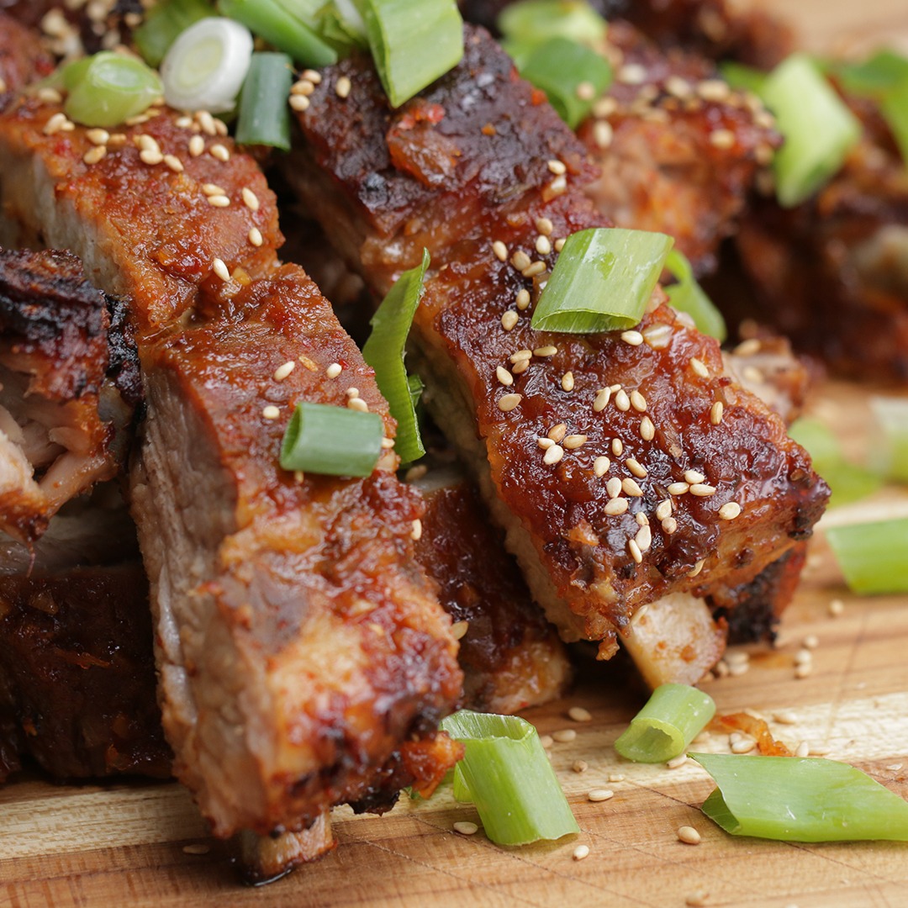

This recipe for spicy korean ribs are a favorite of people around the world.
You're welcome!
Remove membrane from back of ribs or score with a sharp knife. Place ribs in a shallow dish and season with salt and pepper.
Puree onion in a blender or food processor. Add kochujang, vinegar, garlic, sesame oil, soy sauce, and minced ginger; puree into a sauce. Rub 1/3 generously over ribs, reserving the rest of the sauce. Cover ribs with plastic wrap and refrigerate 5 hours to overnight.
Preheat the oven to 325 degrees F (165 degrees C).
Scatter sliced ginger root over the bottom of a roasting pan. Place ribs meat-side down on top of ginger slices and pour lager over ribs. Cover with a lid or aluminum foil.
Bake in the preheated oven until meat is loosened from the ribs but not yet falling off the bone, 2 to 2 1/2 hours. Let cool, 5 to 10 minutes.
Preheat an outdoor grill to 400 degrees F (200 degrees C) and lightly oil the grate. Place ribs on the grill and cook until browned, about 6 minutes per side. Coat with 1/2 the reserved sauce during the last 2 minutes of cooking each side. Garnish with white and black sesame seeds.